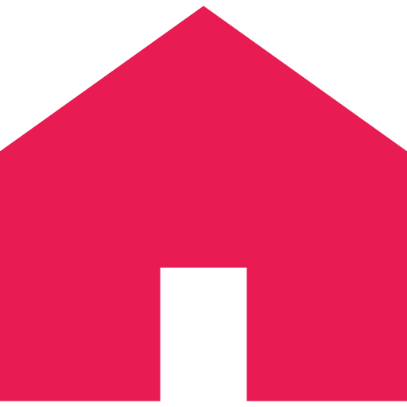

<!DOCTYPE html>
<html lang="ja">
  <head>
    <meta charset="UTF-8">
    <link rel="stylesheet" href="../css/common.css">
    <link rel="stylesheet" href="../css/style.css">
    <meta name="viewport" content="width=device-width, initial-scale=1.0, maximum-scale=1.0, minimum-scale=1.0">
    <title>about</title>
    <!-- jQuery.jsの読み込み -->
    <script type="text/javascript" src="http://ajax.googleapis.com/ajax/libs/jquery/1.3.2/jquery.min.js"></script>
    <script>
      // <!-- スムーズスクロール部分の記述 -->
      $(function(){
        //jQuery
        $(".nav_icon").hide();
        $(".menubtn").click(function(){//メニューボタンをクリックしたとき
            $(".nav_icon").toggle(300);//0.3秒で表示したり非表示にしたりする
        });

        // #で始まるアンカーをクリックした場合に処理
        $('a[href^=#]').click(function() {
            // スクロールの速度
            var speed = 400; // ミリ秒
            // アンカーの値取得
            var href= $(this).attr("href");
            // 移動先を取得
            var target = $(href == "#" || href == "" ? 'html' : href);
            // 移動先を数値で取得
            var position = target.offset().top;
            // スムーススクロール
            $('body,html').animate({scrollTop:position}, speed, 'swing');
            return false;
        });

        // <!-- ページをふわっと出す記述 -->
        // フェードインで表示するコンテンツをdisplay:noneで非表示にする
        $('head').append('<style type="text/css">#wrapper_nav{display:none;}</style>');
        $(function() {
          // フェードインidを指定と表示速度ミリ秒
          $('#wrapper_nav').fadeIn(300);
          // ページ遷移時にフェードアウトさせるclickイベントの要素を指定。ここではli a
          $('li a, a.windowFade').click(function() {
            var url = $(this).attr("href");
            // アニメーションで透過0になるまでフェードアウトさせる。速度ミリ秒
            $('#wrapper_nav').animate({"opacity": 0}, 1000, function() {
              location.href = url;
            });
            return false;
          });
        });
        // <!-- ページをふわっと出す記述 -->

        // <!-- ページをふわっと出す記述 -->
        // フェードインで表示するコンテンツをdisplay:noneで非表示にする
         $('head').append('<style type="text/css">#wrapper{display:none;}</style>');
        $(function() {
          // フェードインidを指定と表示速度ミリ秒
          $('#wrapper').fadeIn(600);
          // ページ遷移時にフェードアウトさせるclickイベントの要素を指定。ここではli a
          $('li a, a.windowFade').click(function() {
            var url = $(this).attr("href");
            // アニメーションで透過0になるまでフェードアウトさせる。速度ミリ秒
            $('#wrapper').animate({"opacity": 0}, 300, function() {
              location.href = url;
            });
            return false;
          });
        });
        // <!-- ページをふわっと出す記述 -->


        $('.sp_btn').click(function(){
          if($(this).hasClass('open') == false){
            $(this).attr('src', '../img/sp_menu_close.svg').addClass('open');
          }else{
            $(this).attr('src', '../img/sp_menu.svg').removeClass('open');
          }
        });
      });

      //jQuery

    </script>
  </head>
    <body>
    <nav class="nav_pc effect-fade" >
      <div class="nav_sp_logo">
        <a class="nav_logo" href="../index.html"><h1></h1></a>
      </div>
      <ul class="groval-nav">
        <li class="nav-item">
          <a href="../index.html" class="nav_item">トップページ</a>
        </li>
        <li class="nav-item">
          <a href="../service/index.html" class="nav_item">事業について</a>
        </li>
        <li class="nav-item">
          <a href="" class="nav_item">会社について</a>
        </li>
        <li class="nav-item" >
          <a href="../cases/index.html" class="nav_item">過去事例</a>
        </li>
        <!-- <li class="nav-item">
          <a href="../event/index.html" class="nav_item">イベント</a>
        </li> -->
        <!-- <li class="nav-item">
          <a href="../shopping/index.html" class="nav_item">ショッピング</a>
        </li> -->
        <li class="nav-item">
          <a href="../contact/index.html" class="nav_cv"  target="_blank">お問い合わせ・ご相談</a>
        </li>
      </ul>
    </nav>

    <nav class="nav_sp">
      <div class="nav_sp_logo">
        <a class="nav_logo" href="../index.html"><h1></h1></a>
      </div>
      <div class="w1000" class="nav_sp">
        <p class="menubtn"></p>
        <nav class="nav_icon">
            <ul>
                <li><a href="../index.html" class="nav_item"><span></span>トップページ</a></li>
                <li><a href="../service/index.html" class="nav_item"><span></span>事業について</a></li>
                <li><a href="" class="nav_item"><span></span>会社について</a></li>
                <li><a href="../cases/index.html" class="nav_item"><span></span>過去事例</a></li>
                <!-- <li><a href="../event/index.html" class="nav_item"><span></span>イベント</a></li> -->
                <!-- <li><a href="../shopping/index.html" class="nav_item"><span></span>ショッピング</a></li> -->
                <li><a href="../contact/index.html" class="nav_cv"  target="_blank">お問い合わせ・ご相談</a></li>  
            </ul>  
        </nav>
      <!--/.w1000-->
      </div>
    </nav>

    <section class="top-section" id="wrapper">
        <div class="kv">
          <div class="kv-image">
          </div>
          <div class="title">
            <h2>ABOUT</h2>
            <h3>会社について</h3>
          </div>
        </div>
        <div class="about_contents">
            <div class="about_text effect-fade">
              <h4>経営理念</h4>
              <p class="about_box">美容と健康をメディアに関わる多くの女性へ向けて、
                「キャリアを活かし、個人が自分自身で綺麗になって社会進出できるように」との想いから、
                一般社団法人日本セルフプロデュース協会を設立。<br>
                「女性の美」と「大人の魅了を一生のタカラに」このテーマの素晴らしさ・大切さを、日本全国そして世界の女性へと伝えています。</p>
              <h4>TV出演</h4>
              <p class="about_box">
                通販の出演者を育成するアカデミー校長をし、「マツコ会議」に取材され、
                これまで250名の卒業生から毎年多くの人材をメディアデビューさせています。<br>
                【出演番組】<br>
                  各ＴＶＳＨＯＰＰＩＮＧ番組、ＱＶＣジャパン、ショップチャンネルレギュラー出演。 <br>
                  テレビ東京、東海テレビ、大坂ＡＢＣテレビ等地上波通販番組に出演。 <br>
                  大手美容メーカーのインフォマーシャル美容コメント出演等多数。 <br>
                  ラジオ出演、各種雑誌コメント掲載 、毎月コラム２執筆活動、各企業ライブコマース出演。</p>
              <h4>実績</h4>
              <p class="about_box">
                【テレビ通販】<br>
                テレビ通販歴２７年の経験・美容家の経験を強みに、
                生放送テレビショッピング・各通販番組に多数出演。
                最先端の商品に対して億単位の売り上げを達成、一時間で1億の売上を作るなど数多くのヒット商品を生み出しました。<br>
                各TV通販に年間80回出演し、近年各ブランドの推薦から、評論を軸としたテレビレギュラー出演回数「年100本」を達成しました。<br><br>
                【美容アドバイザー】<br>
                国内外の各メーカーから美容家としてのアドバイスを依頼され、最先端の商品をヒットさせています。<br>
                上海や韓国のアジア最大の美容展示会に美容家として招待され、日本の美容商材をPRしています。<br><br>
                【海外市場向け商品開発】<br>
                中国美容市場も詳しく、中国ECのご相談を承っています。
                韓国のTV通販にも精通し、韓国の美容メーカー30社からも日本の美容家としてアドバイスを求められ定期的に韓国訪問してます。<br>
                その他ヨーロッパ、アメリカ、オーストラリアの商品のアドバイザーの実績があります。<br><br>
                【セミナー講師】<br>
                美容家育成セミナーやゲスト育成セミナーを行い、これまでに120名の美容家・TVゲストプレゼンテーターを育成。
                生徒の中からTV通販でプレゼンテーター大活躍してる方々も多く、今後デビューを控えてる方多数在籍。<br>
                日本アインチエイジング歯科学会の講演・TC協会のセミナー講師・日本抗加齢医学会への参加など、
                各企業の顧問や講師活動を実施しています。
              </p>
              <h4>イベント活動</h4>
              <p class="about_box">
              毎年会員制クラブラウンジにて「ランウェイＰＡＲＴＹ」、
              毎月会員制レストランにて「女性起業家交流会」、
              インフルエンサーモニタリングイベント、各企業商品ＰＲ交流会など、各種セミナーを開催しています。
              美容業界の現場30年で、美容全般、美肌作り、メイク、エステの講師のオファーも多数いただいています。
              </p>
              <h4>代表挨拶</h4>
              <p class="about_box">
                テキストテキストテキストテキストテキストテキストテキストテキストテキストテキストテキストテキストテキストテキストテキストテキストテキストテキストテキストテキストテキストテキスト</p>
            </div>
            <a  class="cv_wrap" href="../service/index.html"><p class="cv button" class="button" href="#">事業を見る</p></a>
        </div>
    </section>
    <div class="content-section">

    <footer class="footer_wrap">
      <div class="footer_policy_wrap">
        <ul class="footer_policy">
          <li class="footer_policy_item"><a href="../company/index.html">会社概要</a></li>
          <li class="footer_policy_item"><a href="../sitepolicy/index.html">サイトポリシー</a></li>
          <li class="footer_policy_item"><a href="../privacy/index.html">プライバシーポリシー</a></li>
        </ul>
      </div>
      <div class="footer_about">
        <ul class="footer-icon">
          <li></li>
          <li></li>
          <li></li>
        </ul>
        <p class="footer-text"> JSPA｜一般社団法人日本セルフプロデュース協会<br>
          7-2 denenchofu, otaku-ku, Tokyo<br>
          Learn More
        </p>
        <p class="footer-copyright">Copyright © 2021 xxxxxxxx</p>
      </div>
    </footer>

  </body>
</html>